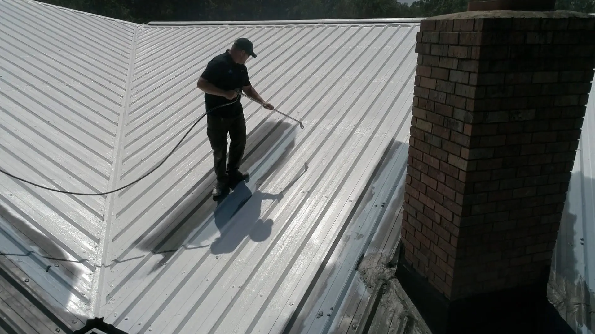
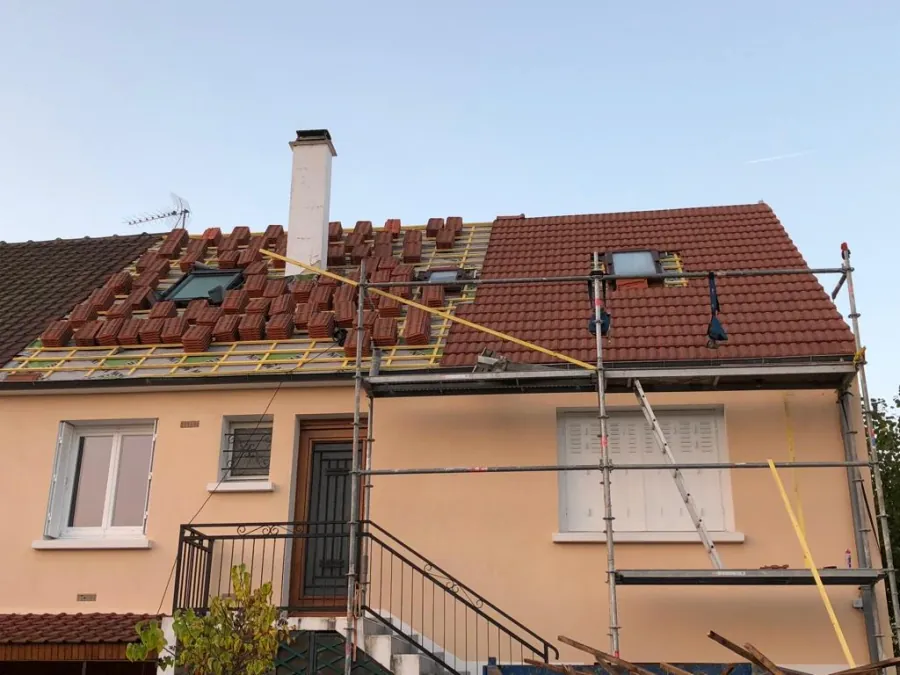
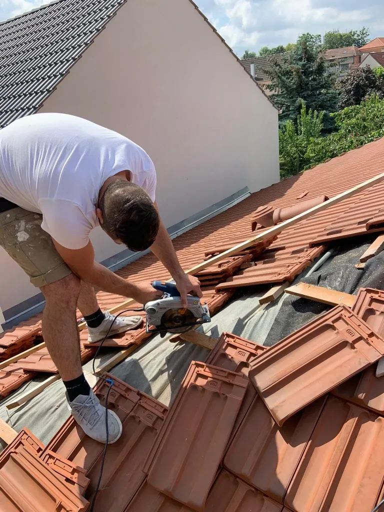
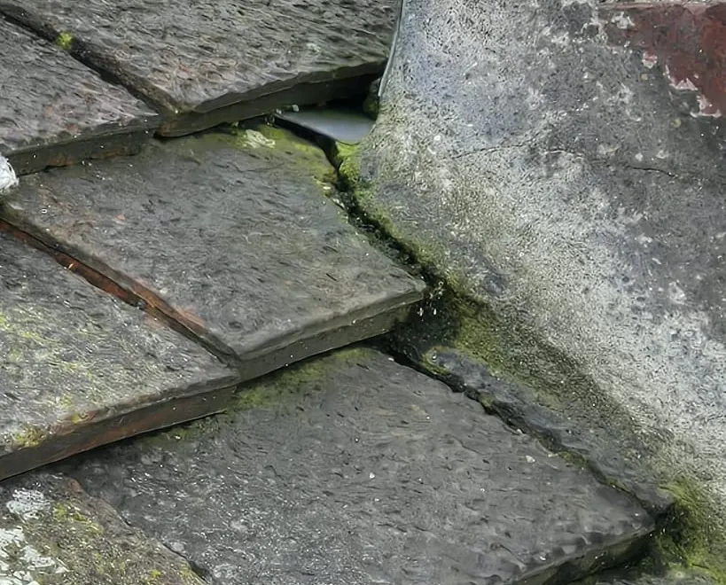
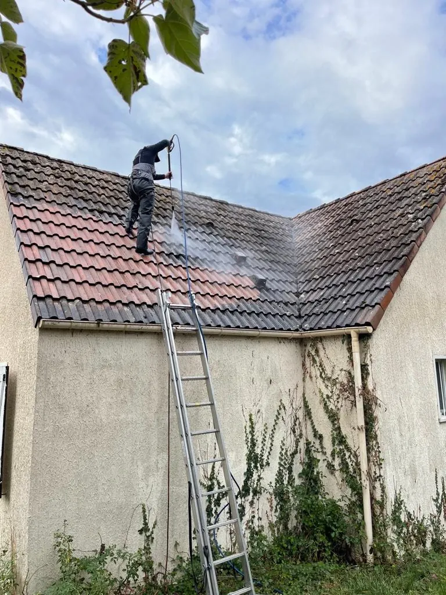
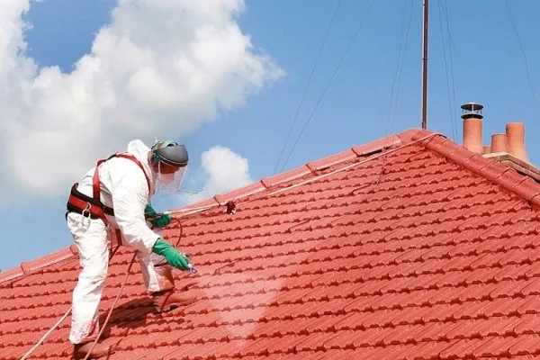
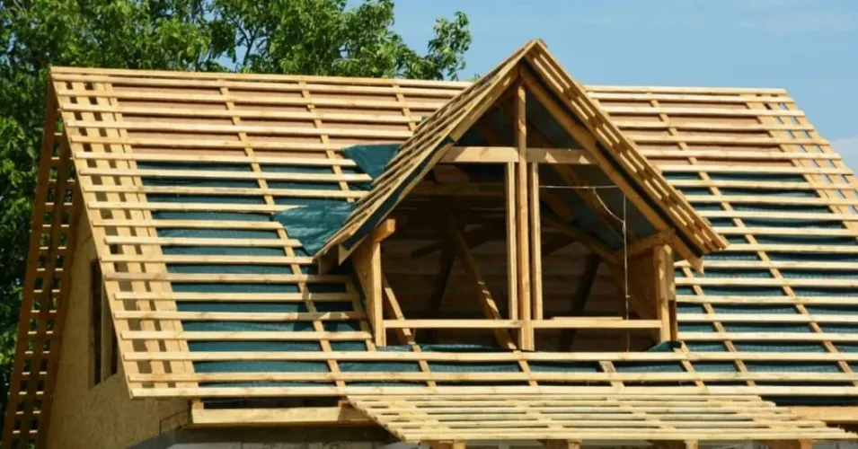
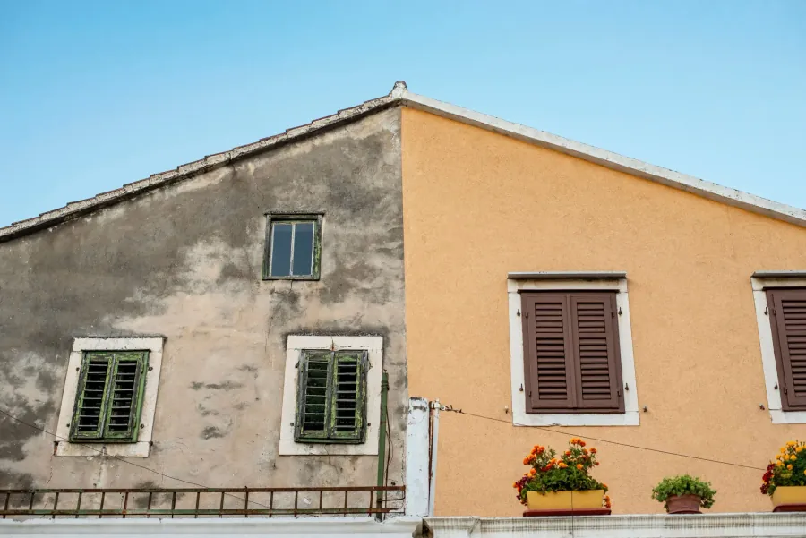
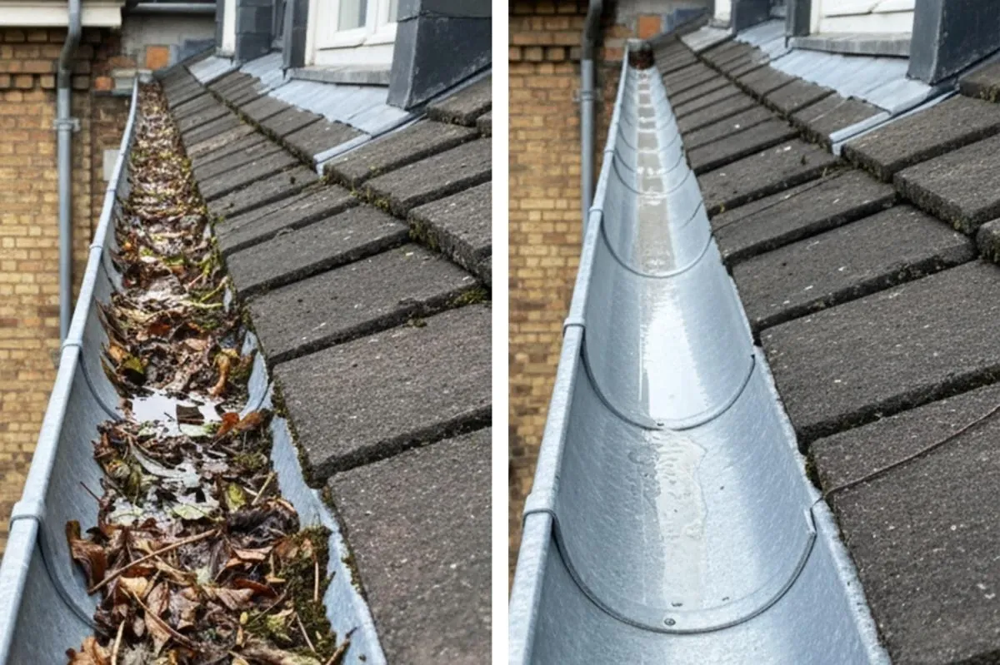
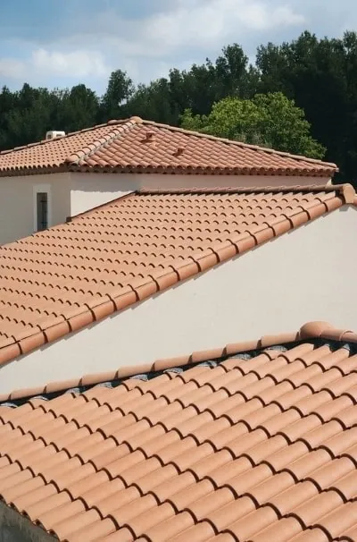

Couvreur Saint-Georges-sur-Eure
Nettoyage toiture
Reparation toiture
Saint-Georges-sur-Eure
Réparation, rénovation, urgence fuite, démoussage et traitement de toiture à Saint-Georges-sur-Eure. Une réponse sous 24h et une intervention rapide.
Pourquoi confier votre toit à Couvreur 28 à Saint-Georges-sur-Eure ?
Trouver un couvreur qualifié à Saint-Georges-sur-Eure demande souvent plusieurs essais. Entre les montants avancés sans relevé et les chantiers livrés sans garantie, la méfiance se comprend.
Passer par Couvreur 28, c'est traiter avec une entreprise voisine qui inscrit ses engagements noir sur blanc :
- ✓ Assurance décennale activée pour tout chantier à Saint-Georges-sur-Eure
- ✓ Lundi au Samedi: 08h - 22h
- ✓ Une réponse en 24h maximum
- ✓ Des couvreurs formés au bâti ancien à Saint-Georges-sur-Eure autant qu'aux constructions récentes
- ✓ Un chiffrage offert, que vous restez libre d'écarter
Notre équipe couvre l'ensemble de vos besoins à Saint-Georges-sur-Eure : réparation toiture, rénovation toiture, urgence réparation fuite, nettoyage toiture, traitement de toiture et isolation toiture.
Un couvreur qualifié à Saint-Georges-sur-Eure, ça ne se trouve pas au hasard. Nos garanties :
Garantie décennale
Chaque chantier est assuré
Réponse Express
24h max
Rayon 50km
L'Eure-et-Loir de bout en bout
Larges Horaires
Lundi au Samedi: 08h - 22h
Artisans Qualifiés
Gestes traditionnels & procédés actuels
Chiffrage Offert
Que vous restez libre de refuser
Notre équipe couvre l'ensemble de vos besoins à Saint-Georges-sur-Eure : réparation toiture, rénovation toiture, urgence réparation fuite, nettoyage toiture, traitement de toiture et isolation toiture.
Nos savoir-faire de couvreur à Saint-Georges-sur-Eure
Couvreur expérimenté à Saint-Georges-sur-Eure (28) — chiffrage offert sur tous vos travaux

Réparation Toiture
À Saint-Georges-sur-Eure, l'humidité de la vallée aggrave vite une infiltration laissée sans réponse. Nos couvreurs remontent au point d'entrée réel, reprennent les éléments hors service et referment l'étanchéité sous 24h. Garanti dix ans.
VOIR LE DÉTAIL
Rénovation Toiture
Une couverture en fin de vie à Saint-Georges-sur-Eure se refait plutôt qu'elle ne se rapièce. Dépose, charpente contrôlée et traitée, écran sous-toiture et matériaux neufs : un toit sain, mieux isolé, garanti dix ans.
VOIR LE DÉTAIL
Urgence Réparation Fuite
Une fuite déclarée à Saint-Georges-sur-Eure nous trouve à un quart d'heure de route. Sécurisation, bâchage dans l'heure, puis reprise définitive garantie dix ans.
VOIR LE DÉTAIL
Nettoyage Toiture
La proximité de l'Eure entretient une humidité qui favorise mousses et lichens. Brossage, démoussage intégral, rinçage puis préventif appliqué derrière. Passage sous 48h, produits respectueux du matériau, garanti cinq ans.
VOIR LE DÉTAIL
Traitement de Toiture
Traiter une couverture encore saine à Saint-Georges-sur-Eure coûte une fraction d'une réfection. Anti-mousse curatif puis hydrofuge protecteur : le matériau cesse d'absorber l'eau et encaisse les gels. Garanti dix ans.
VOIR LE DÉTAIL
Peinture Toiture
Sur les secteurs pavillonnaires de la commune, les tuiles béton se décolorent avec les années. Nettoyage, démoussage, fixateur, puis deux passes de peinture microporeuse et hydrofuge. Finitions garanties dix ans.
VOIR LE DÉTAIL
Isolation Toiture
Une maison de la vallée perd jusqu'à 30 % de sa chaleur par le toit. Isolation des combles perdus ou aménagés en moins de 7 jours, avec des isolants dimensionnés pour votre bâti. Garanti jusqu'à dix ans, aides accessibles via notre label RGE.
VOIR LE DÉTAIL
Étanchéité Toiture
Toit plat ou terrasse à Saint-Georges-sur-Eure qui retient l'eau ? Les relevés et les évacuations concentrent l'essentiel des sinistres. Nous posons le complexe adapté et soignons chaque point singulier. Couvert dix ans.
VOIR LE DÉTAIL
Pose de Fenêtre de Toit
Faire entrer la lumière sous les combles change la valeur d'une maison de la vallée. Ouverture respectant la charpente, pose de la fenêtre Velux en 48h, raccords d'étanchéité traités dans les règles. Garanti dix ans.
VOIR LE DÉTAIL
Gouttières Zinguerie
À Saint-Georges-sur-Eure, une gouttière percée envoie l'eau au pied du mur à chaque averse. Pose ou remplacement en zinc comme en PVC, pentes réglées, raccords étanches et essai d'écoulement final. Garanti dix ans.
VOIR LE DÉTAIL
Charpente
Le bourg ancien de Saint-Georges-sur-Eure compte des charpentes qui travaillent depuis longtemps, exposées à l'humidité de la vallée. Diagnostic structurel, renfort ou remplacement des pièces atteintes, traitement complet. Garanti dix ans.
VOIR LE DÉTAIL
Ravalement de Façade
Une façade fissurée à Saint-Georges-sur-Eure absorbe l'humidité de la vallée bien avant que cela ne se voie. Décrassage, reprise des fissures, traitement anti-humidité, puis finition adaptée. Chantier en moins de 15 jours, garanti dix ans.
VOIR LE DÉTAILCombien coûtent des travaux de toiture à Saint-Georges-sur-Eure
Mesuré chez vous à Saint-Georges-sur-Eure, détaillé sur le devis, inchangé sur la facture
Le diagnostic ne vous coûte rien
Un couvreur se déplace à Saint-Georges-sur-Eure, monte sur la toiture, relève les surfaces réelles et photographie les désordres. État des lieux argumenté, sans obligation de donner suite.
Le détail, jamais le forfait
Sur un chiffrage à Saint-Georges-sur-Eure, fournitures, main-d'œuvre, échafaudage et évacuation figurent chacun sur leur ligne.
Un montant qui tient
Le montant validé à Saint-Georges-sur-Eure ne bouge plus. Si la dépose révèle un support dégradé, nous chiffrons à part et attendons votre accord écrit.
Saint-Georges-sur-Eure est à un quart d'heure de notre atelier chartrain : aucun trajet significatif à financer, sur une réparation de toiture, une rénovation complète, un nettoyage de couverture ou une pose de gouttières. Décrivez-nous votre projet : le chiffrage part sous 24h maximum. Une question de budget d'abord ? Le 02 34 40 17 88 répond du lundi au samedi, de 08h à 22h.

Offre en coursDémoussage à Saint-Georges-sur-Eure : l'hydrofuge est offert
La proximité de l'Eure entretient à Saint-Georges-sur-Eure une humidité qui accélère l'installation des mousses sur les toitures. Ce feutrage plaque l'eau contre le matériau, l'empêche de sécher et prépare son éclatement au premier gel. Sur tout démoussage engagé dans la commune, nous appliquons le traitement hydrofuge sans vous le facturer.
- Votre toiture à Saint-Georges-sur-Eure est démoussée par nos propres couvreurs, sans intermédiaire
- Une formule professionnelle double action pour votre toit à Saint-Georges-sur-Eure : nettoyage et protection
- Le traitement hydrofuge est inclus dans votre devis à Saint-Georges-sur-Eure, jamais facturé à part
- Chiffrage offert, réponse en moins de 24h
CE QUI FAIT LA DIFFÉRENCE
Un couvreur présent dans la vallée toute l'année
📍 Nos communes d'intervention, à deux pas de chez vous :
Principales communes desservies :

Nos ouvrages restent couverts dix ans
Chaque toiture rendue à Saint-Georges-sur-Eure entre dans le périmètre de notre assurance décennale. Dix ans durant, un désordre touchant l'étanchéité ou la solidité de l'ouvrage se reprend à nos frais. Cette garantie ne protège toutefois que si l'entreprise reste présente : nous exerçons dans la vallée depuis vingt ans.
- Vous recevez l'attestation décennale couvrant votre toiture à Saint-Georges-sur-Eure avec le devis
- Elle vaut à Saint-Georges-sur-Eure pour la réparation, la rénovation, la charpente, l'étanchéité comme la zinguerie
- Matériaux normés DTU posés à Saint-Georges-sur-Eure, doublés de la garantie de leur fabricant
- Le même chef de chantier vous accompagne à Saint-Georges-sur-Eure, du premier métré à la livraison
Nos 46 avis notés 5,0/5 viennent en partie de clients de Saint-Georges-sur-Eure qui nous ont rappelés pour un second chantier.
Faire entretenir sa toiture à Saint-Georges-sur-Eure : nos formules
Une intervention isolée ou un contrôle annuel à Saint-Georges-sur-Eure, selon votre situation
Un passage unique, sans reconduction
Le bon choix après une bourrasque, avant la vente d'un bien dans la commune, ou pour reprendre la main sur une couverture délaissée depuis plusieurs saisons.
- Examen complet de la couverture, points singuliers compris
- Un chiffrage détaillé que rien ne vous oblige à accepter
- Remise en état des tuiles, solins, faîtage et rives
- Abords protégés et gravats emportés en fin de chantier
Un contrôle annuel, et vous n'y pensez plus
Chaque année, nous repassons à Saint-Georges-sur-Eure vérifier votre couverture. Ce rendez-vous transforme un futur chantier lourd en une intervention de quelques heures.
- Vérification complète du faîtage, des solins et des fixations à Saint-Georges-sur-Eure
- Nettoyage des gouttières et test des descentes pluviales sur votre toiture à Saint-Georges-sur-Eure
- Un rapport photo vous est transmis après chaque passage
- Vous passez en tête de liste dès qu'une urgence se déclare
Votre couvreur à Saint-Georges-sur-Eure, dans la vallée
Notre entreprise est installée à Chartres et intervient dans la vallée de l'Eure depuis plus de 20 ans. Saint-Georges-sur-Eure, à l'ouest de la préfecture, associe un bourg ancien couvert en tuile plate et en ardoise et des secteurs résidentiels plus récents en tuile mécanique. La proximité de la rivière y entretient une humidité constante, qui use les couvertures plus vite qu'ailleurs et rend l'entretien d'autant plus décisif.
Nous assurons la réparation de toiture et la rénovation complète, la recherche puis le colmatage d'une fuite, le remplacement de tuiles et d'ardoises, la gouttière et la zinguerie, l'isolation des combles, la pose de fenêtres de toit, la charpente et le ravalement de façade. Un interlocuteur unique du devis à la réception.
Nous répondons du lundi au samedi, de 08h à 22h, sous 24h maximum, et nous nous déplaçons en moins d'une heure lorsqu'une fuite est déclarée. En dehors de ces cas, nous conseillons toujours la même chose : faire vérifier sa toiture une fois par an coûte moins cher qu'une seule réparation d'urgence.
Les questions que l'on nous pose à Saint-Georges-sur-Eure
L'essentiel à savoir avant de confier votre toiture à un couvreur à Saint-Georges-sur-Eure
Sous quel délai êtes-vous sur place à Saint-Georges-sur-Eure ?
Comptez 24h au maximum sur une urgence, et une équipe en route dans l'heure lorsqu'une fuite est active. Saint-Georges-sur-Eure est à un quart d'heure de notre atelier chartrain.
Votre devis coûte-t-il quelque chose à Saint-Georges-sur-Eure ?
Rien, déplacement inclus. Nous montons sur votre toiture, relevons les métrés exacts et photographions les désordres, puis nous remettons un chiffrage décomposé poste par poste, sans engagement de votre part.
Sur quelles couvertures travaillez-vous à Saint-Georges-sur-Eure ?
La commune mêle un bourg ancien en tuile plate et ardoise et des secteurs résidentiels plus récents en tuile mécanique. Nous travaillons ces supports, ainsi que le zinc et les toits-terrasses.
Vous déplacez-vous au-delà de Saint-Georges-sur-Eure ?
Quotidiennement. Chartres, Fontenay-sur-Eure, Courville-sur-Eure, Mainvilliers et toute la vallée font partie de notre secteur, comme le reste de l'Eure-et-Loir (28).
Que couvre votre garantie sur un chantier à Saint-Georges-sur-Eure ?
Dix années pleines sur nos ouvrages à Saint-Georges-sur-Eure. Un défaut d'étanchéité ou de solidité dans ce délai est repris à notre charge. Entreprise RGE, attestation remise avec le devis.